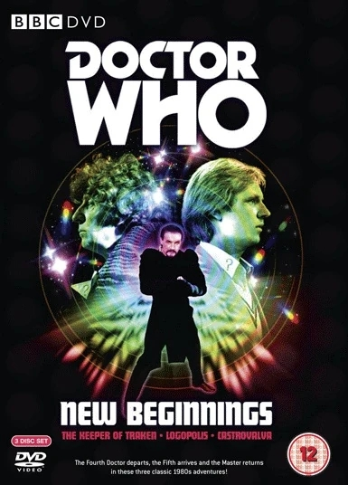
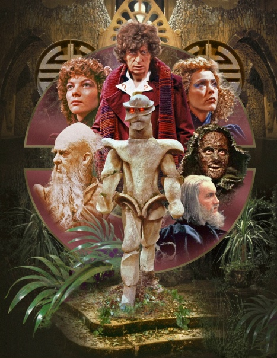

Эра Четвертого Доктора (18 сезон)
<<< НАЗАД ||| 6. Хранитель Тракена ||| ДАЛЬШЕ >>>
Субтитры: Русские и Английские |  |
|---|---|
с фанатским обновлением визуальных эффектов (cunningmunki) Субтитры: Русские и Английские | |
с обновлением визуальных эффектов (cunningmunki) Субтитры: отсутствуют | |
The Keeper of Traken
Дата выхода: 31 января - 21 февраля 1981
Формат: 4 эпизода по 25 мин.
 |  помощник |
Доктор и Адрик прибывают на Тракен — мир, где царит гармония благодаря Источнику, силе, поддерживающей порядок уже тысячелетия. Хранитель Тракена умирает и должен передать власть преемнику. Но за кулисами мирного общества прячется Мастер — старый враг Доктора, давно изувеченный и отчаянно ищущий новое тело. Он манипулирует политикой Тракена, чтобы добраться до Источника и захватить тело одного из консулов. В финале Мастер завладевает телом Тремаса — отца Ниссы. Серия открывает трилогию, которая продолжится в «Логополисе» и завершится в «Кастроивальве». Здесь же появляется Нисса — будущая спутница Доктора. Энтони Эйнли, сыгравший Мастера в теле Тремаса, останется в этой роли на протяжении почти всего классического сериала.
VHS - июнь 1993 |  DVD+Boxset - 29 января 2007 |  Blu-ray - 18 марта 2019 * Версия в нашей группе |
|---|



Трейлер: